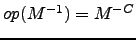
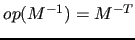
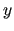
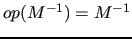
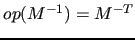
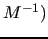

mld_precaply(p,x,y,desc_a,info)
mld_precaply(p,x,y,desc_a,info,trans,work)
This routine computes
 , where
, where  is a previously built
preconditioner, stored into
is a previously built
preconditioner, stored into p, and 
denotes the preconditioner itself or its transpose, according to
the value of trans.
Note that, when MLD2P4 is used with a Krylov solver from PSBLAS,
mld_precaply is called within the PSBLAS routine psb_krylov
and hence it is completely transparent to the user.
Arguments
p |
type(mld_xprec_type), intent(inout). |
| The preconditioner data structure, containing the local part of |
|
x |
type(kind_parameter), dimension(:), intent(in). |
| The local part of the vector . Note that type and kind_parameter must be chosen according to the real/complex, single/double precision version of MLD2P4 under use. | |
y |
type(kind_parameter), dimension(:), intent(out). |
| The local part of the vector . Note that type and kind_parameter must be chosen according to the real/complex, single/double precision version of MLD2P4 under use. | |
desc_a |
type(psb_desc_type), intent(in). |
| The communication descriptor associated to the matrix to be preconditioned. | |
info |
integer, intent(out). |
| Error code. If no error, 0 is returned. See Section 7 for details. | |
trans |
character(len=1), optional, intent(in). |
If trans = 'N','n' then
;
if trans = 'T','t' then
(transpose of ; if trans = 'C','c' then

(conjugate transpose of . |
|
work |
type(kind_parameter), dimension(:), optional, target. |
Workspace. Its size should be at
least 4 * psb_cd_get_local_ cols(desc_a) (see the PSBLAS User's Guide).
Note that type and kind_parameter must be chosen according
to the real/complex, single/double precision version of MLD2P4 under use. |